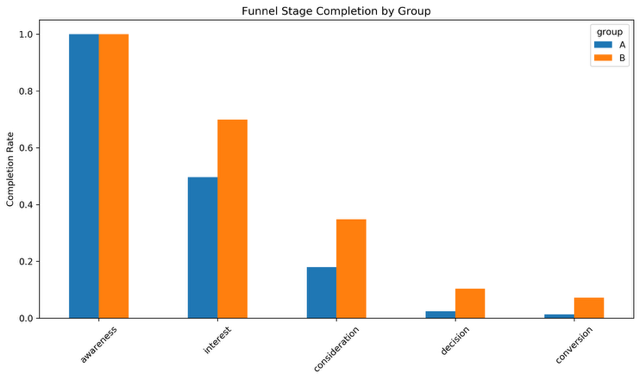
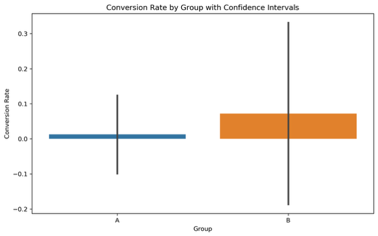

This project delves into the analysis of A/B testing data for a website redesign aimed at improving user conversion rates. I employed a rigorous statistical approach to evaluate the impact of the new design (Group B) against the existing design (Group A). The analysis encompasses synthetic data generation, exploratory data analysis (EDA), visualization, hypothesis testing (t-tests, chi-square tests), funnel analysis, revenue impact assessment, and actionable recommendations based on the findings.
# Imports for data generation
import pandas as pd
import numpy as np
from datetime import datetime, timedelta
import matplotlib.pyplot as plt
import seaborn as sns
from scipy.stats import ttest_ind, chi2_contingency # Used in full script
def analyze_ab_testing_data(df: pd.DataFrame) -> None:
"""
Analyzes A/B testing data and prints the results.
Args:
df: A Pandas DataFrame containing the A/B testing data.
"""
print("--- A/B Testing Data Analysis ---")
print(df.info())
print(df.describe())
# 1. Overall Conversion Rate
print("\n1. Overall Conversion Rate:")
overall_conversion_rate = df['conversion'].mean()
print(f"Overall Conversion Rate: {overall_conversion_rate:.2%}")
# 2. Conversion Rate by Group
print("\n2. Conversion Rate by Group:")
conversion_by_group = df.groupby('group')['conversion'].mean()
print(conversion_by_group)
# 10. Funnel Stage Conversion Rates by Group
print("\n10. Funnel Stage Conversion Rates by Group:")
for group_name in ['A', 'B']:
print(f"\nGroup {group_name}:")
group_df = df[df['group'] == group_name]
total_users = len(group_df)
awareness_rate = group_df['awareness'].sum() / total_users
interest_rate = group_df['interest'].sum() / group_df['awareness'].sum() if group_df['awareness'].sum() > 0 else 0
consideration_rate = group_df['consideration'].sum() / group_df['interest'].sum() if group_df['interest'].sum() > 0 else 0
decision_rate = group_df['decision'].sum() / group_df['consideration'].sum() if group_df['consideration'].sum() > 0 else 0
conversion_rate = group_df['conversion'].sum() / group_df['decision'].sum() if group_df['decision'].sum() > 0 else 0
print(f" Awareness Rate: {awareness_rate:.2%}")
print(f" Interest Rate: {interest_rate:.2%}")
print(f" Consideration Rate: {consideration_rate:.2%}")
print(f" Decision Rate: {decision_rate:.2%}")
print(f" Conversion Rate: {conversion_rate:.2%}")
# 11. Impact of A/B Group on Funnel Stages
print("\n11. Impact of A/B Group on Funnel Stages:\n")
stages = ['awareness', 'interest', 'consideration', 'decision', 'conversion']
funnel_summary = df.groupby('group')[stages].mean().T
funnel_summary['dropoff'] = 1 - funnel_summary.max(axis=1) # Show drop-off from top stage
print(funnel_summary)
funnel_summary.drop(columns='dropoff').plot(kind='bar', figsize=(10, 6))
plt.title('Funnel Stage Completion by Group')
plt.ylabel('Completion Rate')
plt.xticks(rotation=45)
plt.tight_layout()
plt.show()
# 12. Statistical Significance of Conversion Rate Difference
print("\n12. Statistical Significance of Conversion Rate Difference:")
group_a_conversions = df[df['group'] == 'A']['conversion']
group_b_conversions = df[df['group'] == 'B']['conversion']
t_statistic, p_value = stats.ttest_ind(group_a_conversions, group_b_conversions)
print(f"T-statistic: {t_statistic:.3f}, P-value: {p_value:.3f}")
if p_value < 0.05:
print(" The difference in conversion rates between Group A and Group B is statistically significant.")
else:
print(" The difference in conversion rates between Group A and Group B is not statistically significant.")
# Note: This is a simplified representation of the full generation script.
# Full script includes all demographics, funnel stages, and revenue logic.
Distribution of Time Spent on Page by Group
Funnel Stage Completion Rates by Group
Distribution of Revenue per User by Group
The A/B testing results provide strong evidence that the new website design (Group B) significantly outperforms the existing design (Group A) across key metrics including conversion rate, user engagement (time on page), funnel progression, and revenue generation.
Key Recommendations: